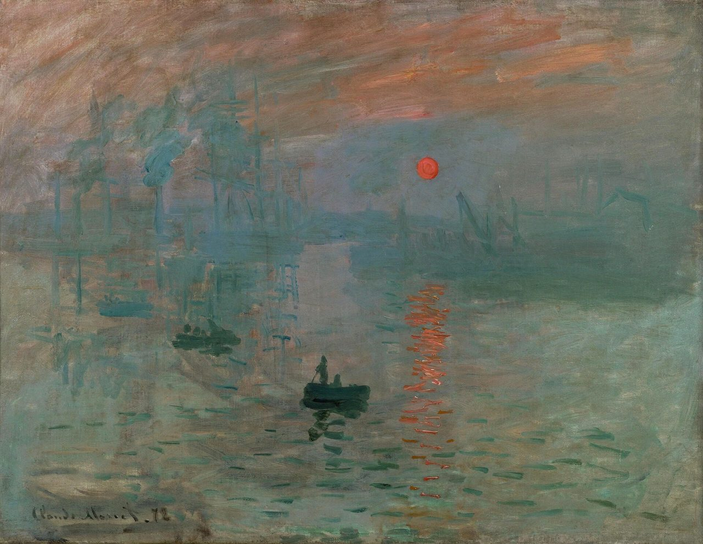

藝術101名畫背後的故事 EP04
印象．日出
莫內・1872

一句嘲笑，變成一整個畫派的名字。
一個隨口取的名字
1872年，莫內在他長大的港口勒阿弗爾畫下清晨的霧。1874年參展時被問畫名，他說畫不太像勒阿弗爾的風景，就寫「印象」吧。天文學家後來還推算出，畫的可能是11月13日早上七點半左右。
被嘲笑出來的畫派
評論家勒魯瓦在諷刺報上寫，剛起草的壁紙都比這幅海景完整，文章題目叫「印象派畫家展」。沒想到畫家們把這個名字收下來了。
會閃的太陽
神經科學家量過，那顆橘紅太陽的亮度和天空幾乎一樣。轉成黑白，太陽就不見了，所以它在眼裡一直閃。
下次看到它，先看這裡
橘紅色的太陽 亮度和天空相同，轉黑白會消失
水面上的倒影 幾道橘色短筆，一路落到畫面下緣
左下角簽名與年份 Claude Monet 72，寫著1872
作品資料
莫內（Claude Monet）
《印象．日出》Impression, Sunrise，1872
畫布、油彩 48 × 63 公分
法國巴黎 瑪摩丹莫內美術館（Musée Marmottan Monet）
《印象．日出》Impression, Sunrise，1872
畫布、油彩 48 × 63 公分
法國巴黎 瑪摩丹莫內美術館（Musée Marmottan Monet）